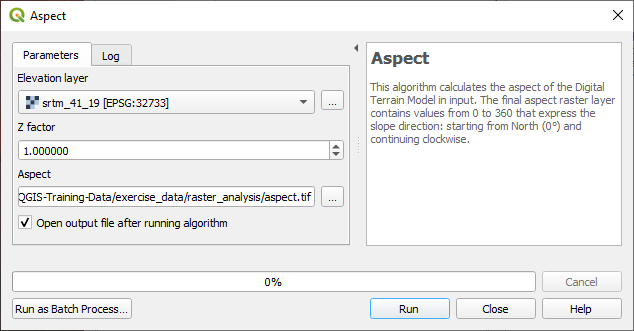
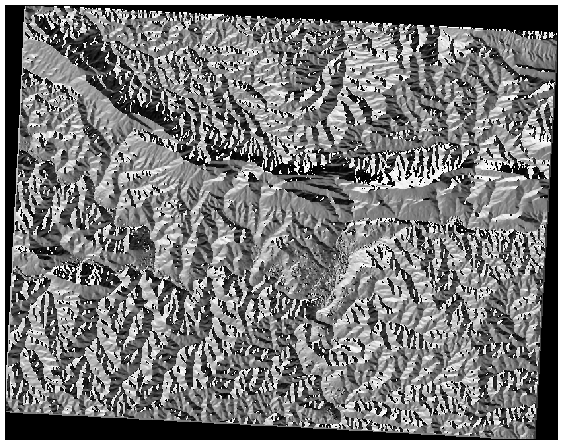
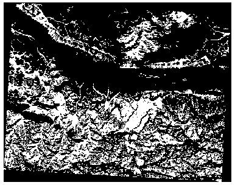
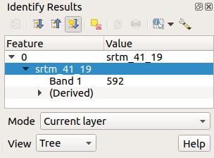
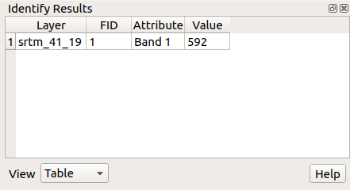
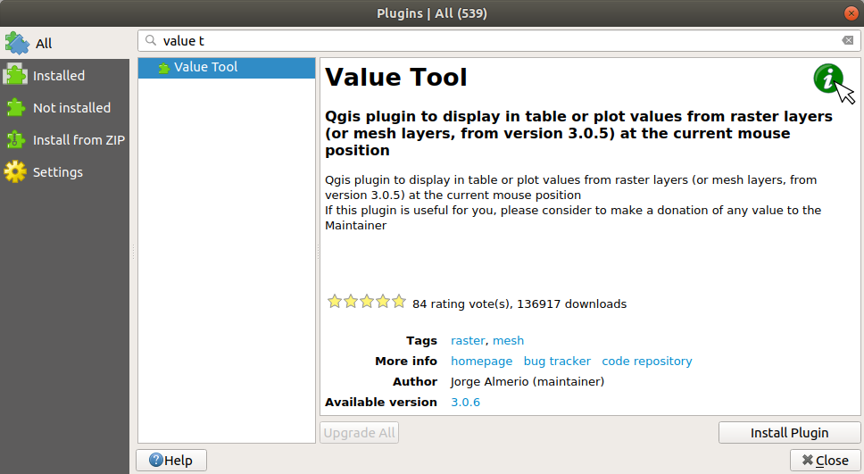

Certain types of rasters allow you to gain more insight into the
terrain that they represent.
Digital Elevation Models (DEMs) are particularly useful in this
regard.
In this lesson you will use terrain analysis tools to find out more
about the study area for the proposed residential development from
earlier.
The goal for this lesson: To use terrain analysis tools to derive
more information about the terrain.
We are going to use the same DEM layer as in the previous lesson.
If you are starting this chapter from scratch, use the
Browser panel and load the
raster/SRTM/srtm_41_19.tif.
The DEM layer shows you the elevation of the terrain, but it can
sometimes seem a little abstract.
It contains all the 3D information about the terrain that you need,
but it doesn’t look like a 3D object.
To get a better impression of the terrain, it is possible to calculate
a hillshade, which is a raster that maps the terrain using light and
shadow to create a 3D-looking image.
We are going to use algorithms in the
Raster ► Raster terrain analysis menu.
Click on the Hillshade menu
The algorithm allows you to specify the position of the light
source: Azimuth has values from 0 (North) through 90
(East), 180 (South) and 270 (West), while the
Vertical angle sets how high the light source is
(0 to 90 degrees).
We will use the following values:
Z factor at 1.0
Azimuth (horizontal angle) at 300.0°
Vertical angle at 40.0°
Save the file in a new folder exercise_data/raster_analysis/
with the name hillshade.tif
Finally click on Run
You will now have a new layer called hillshade that looks like
this:
That looks nice and 3D, but can we improve on this? On its own, the hillshade
looks like a plaster cast. Can’t we use it together with our other, more
colorful rasters somehow? Of course we can, by using the hillshade as an
overlay.
7.3.2. ★☆☆ Follow Along: Using a Hillshade as an Overlay
A hillshade can provide very useful information about the sunlight at a given
time of day. But it can also be used for aesthetic purposes, to make the map
look better. The key to this is setting the hillshade to being mostly
transparent.
Change the symbology of the original srtm_41_19 layer to use the
Pseudocolor scheme as in the previous exercise
Hide all the layers except the srtm_41_19 and hillshade
layers
Click and drag the srtm_41_19 to be beneath the hillshade
layer in the Layers panel
Set the hillshade layer to be transparent by clicking on the
Transparency tab in the layer properties
Set the Global opacity to 50%.
You’ll get a result like this:
Switch the hillshade layer off and back on in the
Layers panel to see the difference it makes.
Using a hillshade in this way, it’s possible to enhance the topography of the
landscape. If the effect doesn’t seem strong enough to you, you can change the
transparency of the hillshade layer; but of course, the brighter
the hillshade becomes, the dimmer the colors behind it will be. You will need
to find a balance that works for you.
Think back to the estate agent problem, which we last addressed in the
Vector Analysis lesson.
Let us imagine that the buyers now wish to purchase a building and
build a smaller cottage on the property.
In the Southern Hemisphere, we know that an ideal plot for development
needs to have areas on it that:
are north-facing
with a slope of less than 5 degrees
But if the slope is less than 2 degrees, then the aspect doesn’t matter.
Slope informs about how steep the terrain is. If, for example,
you want to build houses on the land there, then you need land
that is relatively flat.
To calculate the slope, you need to use the Slope algorithm
of the Processing ► Raster terrain analysis.
Open the algorithm
Choose srtm_41_19 as the Elevation layer
Keep the Z factor at 1.0
Save the output as a file with the name slope.tif in the same folder as the
hillshade.tif
Click on Run
Now you’ll see the slope of the terrain, each pixel holding the corresponding
slope value. Black pixels show flat terrain and white pixels, steep terrain:
Aspect is the compass direction that the slope of the terrain faces. An aspect
of 0 means that the slope is North-facing, 90 East-facing, 180 South-facing, and
270 West-facing.
Since this study is taking place in the Southern Hemisphere, properties should
ideally be built on a north-facing slope so that they can remain in the
sunlight.
Use the Aspect algorithm of the
Processing ► Raster terrain analysis to get the aspect.tif
layer saved along with the slope.tif.
Answer
Set your Aspect dialog up like this:

Your result:

7.3.6. ★★☆ Follow Along: Finding the north-facing aspect
Now, you have rasters showing you the slope as well as the aspect,
but you have no way of knowing where ideal conditions are
satisfied at once.
How could this analysis be done?
The answer lies with the Raster calculator.
QGIS has different raster calculators available:
Raster ► Raster Calculator
In processing:
Raster Analysis ► Raster calculator
GDAL ► Raster miscellaneous ► Raster calculator
SAGA ► Raster calculus ► Raster calculator
Each tool is leading to the same results, but the syntax may be
slightly different and the availability of operators may vary.
We will use Raster Analysis ► Raster calculator in
the Processing Toolbox
Open the tool by double clicking on it.
The upper left part of the dialog lists all the loaded raster
layers as name@N, where name is the name of the layer and
N is the band.
In the upper right part you will see a lot of different operators.
Stop for a moment to think that a raster is an image.
You should see it as a 2D matrix filled with numbers.
North is at 0 (zero) degrees, so for the terrain to face north, its
aspect needs to be greater than 270 degrees or less than 90
degrees.
Therefore the formula is:
aspect@1<=90ORaspect@1>=270
Now you have to set up the raster details, like the cell size,
extent and CRS.
This can be done manually or it can be automatically set by
choosing a Referencelayer.
Choose this last option by clicking on the … button
next to the Reference layer(s) parameter.
In the dialog, choose the aspect layer, because we want
to obtain a layer with the same resolution.
Save the layer as aspect_north.tif.
The dialog should look like:
Finally click on Run.
Your result will be this:
The output values are 0 or 1.
What does it mean?
For each pixel in the raster, the formula we wrote returns whether it matches
the conditions or not.
Therefore the final result will be False (0) and True (1).
Now you have generated three raster layers from the DEM:
aspect_north: terrain facing north
slope_lte2: slope equal to or below 2 degrees
slope_lte5: slope equal to or below 5 degrees
Where the condition is met, the pixel value is 1.
Elsewhere, it is 0.
Therefore, if you multiply these rasters, the pixels that have a value
of 1 for all of them will get a value of 1 (the rest will get
0).
The conditions to be met are:
at or below 5 degrees of slope, the terrain must face north
at or below 2 degrees of slope, the direction that the terrain faces
does not matter.
Therefore, you need to find areas where the slope is at or below five
degrees AND the terrain is facing north, OR the slope is at or
below 2 degrees. Such terrain would be suitable for development.
To calculate the areas that satisfy these criteria:
As you can see from the image above, the combined analysis has left us
with many, very small areas where the conditions are met (in white).
But these aren’t really useful for our analysis, since they are too
small to build anything on.
Let us get rid of all these tiny unusable areas.
Open the Sieve tool
(GDAL ► Raster Analysis in the
Processing Toolbox)
Set the Input file to all_conditions, and the
Sieved to all_conditions_sieve.tif (under
exercise_data/raster_analysis/).
Set the Threshold to 8 (minimum eight contiguous
pixels), and check Use 8-connectedness.
Once processing is done, the new layer will be loaded.
What is going on? The answer lies in the new raster file’s
metadata.
View the metadata under the Information tab of the
Layer Properties dialog.
Look the STATISTICS_MINIMUM value:
This raster, like the one it is derived from, should only feature
the values 1 and 0, but it has also a very large negative
number.
Investigation of the data shows that this number acts as a null
value.
Since we are only after areas that weren’t filtered out, let us set
these null values to zero.
Open the Raster Calculator, and build this expression:
(all_conditions_sieve@1<=0)=0
This will maintain all non-negative values, and set the negative
numbers to zero, leaving all the areas with value 1 intact.
Save the output under exercise_data/raster_analysis/ as
all_conditions_simple.tif.
Your output looks like this:

This is what was expected: a simplified version of the earlier
results.
Remember that if the results you get from a tool aren’t what you
expected, viewing the metadata (and vector attributes, if applicable)
can prove essential to solving the problem.
7.3.10. ★★☆ Follow Along: Reclassifying the Raster
We have used the Raster calculator to do calculations on raster
layers.
There is another powerful tool that we can use to extract information
from existing layers.
Back to the aspect layer.
We know now that it has numerical values within a range from 0 through
360.
What we want to do is to reclassify this layer to other discrete
values (from 1 to 4), depending on the aspect:
1 = North (from 0 to 45 and from 315 to 360);
2 = East (from 45 to 135)
3 = South (from 135 to 225)
4 = West (from 225 to 315)
This operation can be achieved with the raster calculator, but the
formula would become very very large.
The alternative tool is the Reclassify by table tool
in Raster analysis in the
Processing Toolbox.
Open the tool
Choose aspect as the Inputrasterlayer
Click on the … of Reclassification table.
A table-like dialog will pop up, where you can choose the minimum,
maximum and new values for each class.
Click on the Add row button and add 5 rows.
Fill in each row as the following picture and click OK:
The method used by the algorithm to treat the threshold values of
each class is defined by the Range boundaries.
Save the layer as reclassified.tif in the
exercise_data/raster_analysis/ folder
Click on Run
If you compare the native aspect layer with the
reclassified one, there are not big differences.
But by looking at the legend, you can see that the values go from
1 to 4.
Let us give this layer a better style.
Open the Layer Styling panel
Choose Paletted/Unique values, instead of
Singleband gray
Click on the Classify button to automatically fetch the
values and assign them random colors:
The output should look like this (you can have different colors given
that they have been randomly generated):
With this reclassification and the paletted style applied to the
layer, you can immediately differentiate the aspect areas.
Unlike vector layers, raster layers don’t have an attribute table.
Each pixel contains one or more numerical values (singleband or
multiband rasters).
All the raster layers we used in this exercise consist of just one
band.
Depending on the layer, pixel values may represent elevation, aspect
or slope values.
How can we query the raster layer to get the value of a pixel?
We can use the Identify Features button!
Select the tool from the Attributes toolbar.
Click on a random location of the srtm_41_19 layer.
Identify Results will appear with the value of the
band at the clicked location:

You can change the output of the Identify Results panel
from the current tree mode to a table one by selecting
Table in the View menu at the bottom of the
panel:

Clicking each pixel to get the value of the raster could become
annoying after a while.
We can use the Value Tool plugin to solve this problem.
Go to Plugins ► Manage/Install Plugins…
In the All tab, type valuet in the search box
Select the Value Tool plugin, press Install Plugin
and then Close the dialog.

The new Value Tool panel will appear.
Tip
If you close the panel you can reopen it by enabling it in
the View ► Panels ► Value Tool or by
clicking on the icon in the toolbar.
To use the plugin just check the Enable checkbox and be
sure that the srtm_41_19 layer is active (checked) in the
Layers panel.
Move the cursor over the map to see the value of the pixels.
But there is more.
The Value Tool plugin allows you to query all the active raster
layers in the Layers panel.
Set the aspect and slope layers active
again and hover the mouse on the map:
You’ve seen how to derive all kinds of analysis products from a DEM.
These include hillshade, slope and aspect calculations.
You’ve also seen how to use the raster calculator to further analyze
and combine these results.
Finally you learned how to reclassify a layer and how to query the
results.
Now you have two analyses: the vector analysis which shows you the
potentially suitable plots, and the raster analysis that shows you the
potentially suitable terrain.
How can these be combined to arrive at a final result for this
problem?
That’s the topic for the next lesson, starting in the next module.


 Identify Features button!
Identify Features button!